Integrales inmediatas
Primitivas
A modo de introducción, os dejamos una lista sobre las integrales inmediatas, lo que constituye la base fundamental para una primera toma de contacto.
Página creada con el fin de ayudar con el estudio de las matemáticas
A modo de introducción, os dejamos una lista sobre las integrales inmediatas, lo que constituye la base fundamental para una primera toma de contacto.
El método de integración por partes permite calcular la integral de un producto de dos funciones aplicando la fórmula:
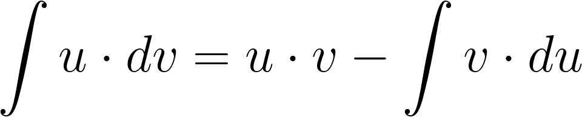donde las funciones logarítmicas, polinómicas y “arcos” se eligen como u y las funciones exponenciales y trigonométricas del tipo seno y coseno, se eligen como v.
Este método se basa en la utilización de la derivada de la función compuesta o regla de la cadena. El método consiste en expresar la función integrando dada en función de otra variable, de modo que la integral resultante sea inmediata. Esto se consigue mediante un cambio de variable, y procediendo de la siguiente forma:
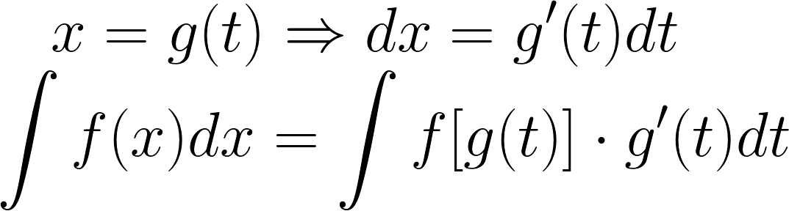Una vez obtenida las primitivas de la última integral en función de t, se deshace el cambio de variable y así obtenemos la integral buscada.
El método de integración de funciones racionales se utiliza para resolver integrales del tipo:
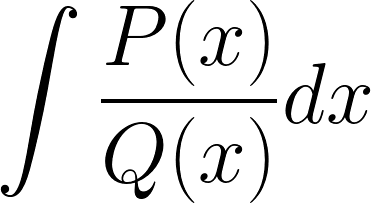siendo P(x) y Q(x) polinomios con coeficientes reales.
La regla de Barrow dice que la integral definida de una función continua f(x) en un intervalo cerrado [a, b] es igual a la diferencia entre los valores que toma una función primitiva G(x) de f(x), en los extremos de dicho intervalo.
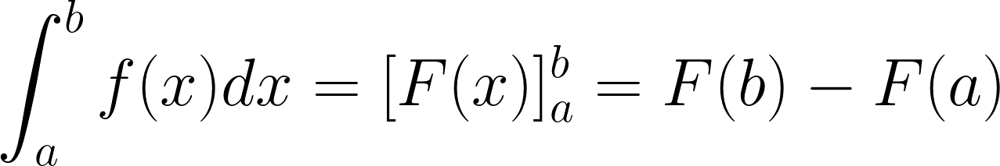Si la función es positiva en un intervalo [a, b] entonces la gráfica de la función está por encima del eje de abscisas. El área de la función viene dada por:
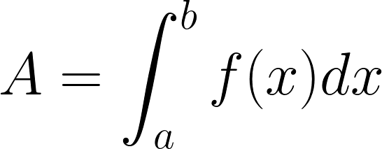Caso I. Área encerrada bajo una curva. Para calcular el área comprendida entre la gráfica de una función f(x) y el eje de abcisas en un punto intervalo en el que la gráfica aparece por encima y por debajo del eje X, es necesario hallar cada una de las áreas por separado. En los subintervalos en los que la gráfica está por debajo del eje X, la integral será negativa, y tomaremos el valor absoluto en toda la integral. 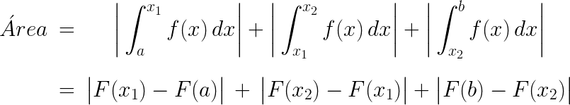 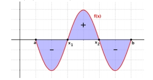
Caso II. Área comprendida entre dos curvas. El área compredida entre las gráficas de las funciones f(x) y g(x) en el intervalo [a,b] es igual que el área comprendida entre la función diferencia (f- g)(x) y el eje X en ese intervalo.
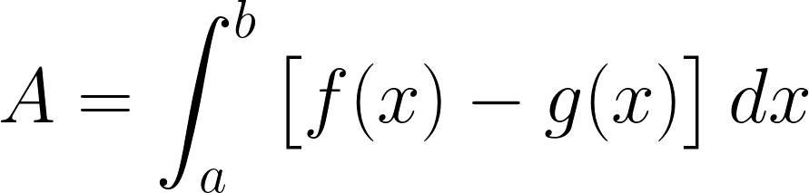 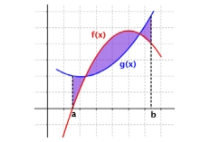siendo f(x) > g(x). Si no se determina qué función está por encima de la otra, podemos escribir la expresión general:
Sin embargo, desde el punto de vista práctico, en el caso en el que las funciones f(x) y g(x) tengan varios puntos de corte, será conveniente hallar las diferentes regiones y determinar las áreas por separado.
Las integrales dobles son una manera de integrar sobre una región bidimensional. Entre otras cosas, nos permiten calcular el volumen bajo una superficie. Dada una función de dos variables, f(x,y), puedes encontrar el volumen entre la gráfica y una región rectangular del plano XY al tomar la integral de una integral.
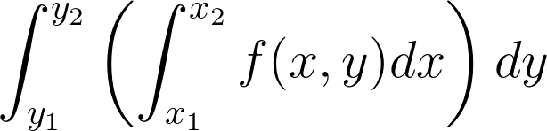Llamamos a esta integral “integral doble”. Se puede calcular el mismo volumen cambiando el orden de integración:
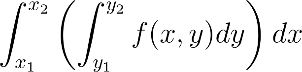